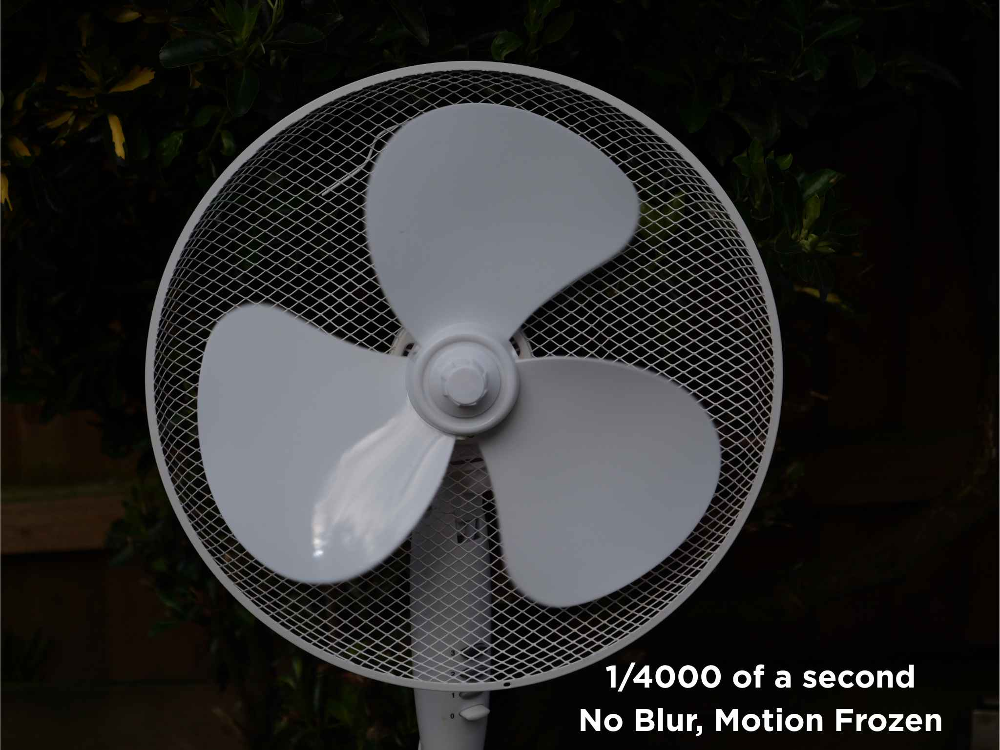
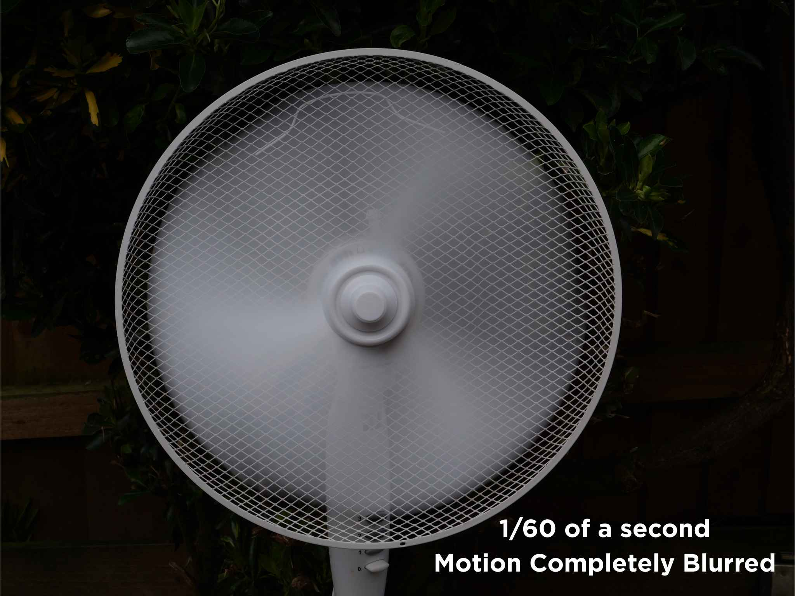
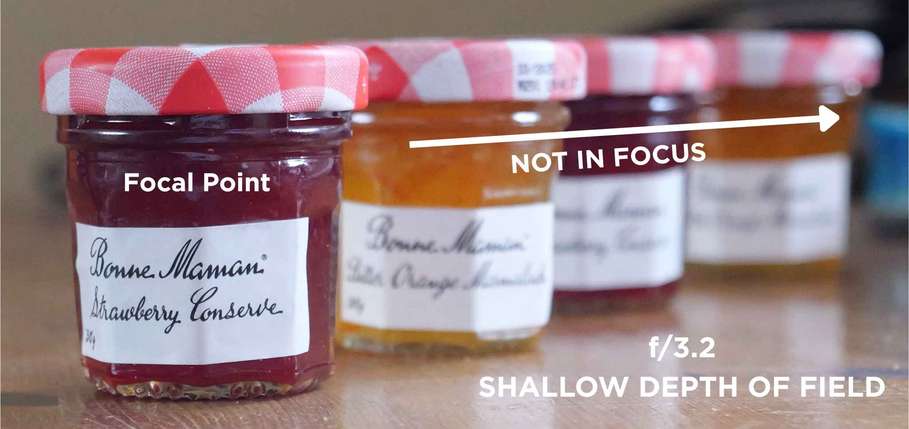
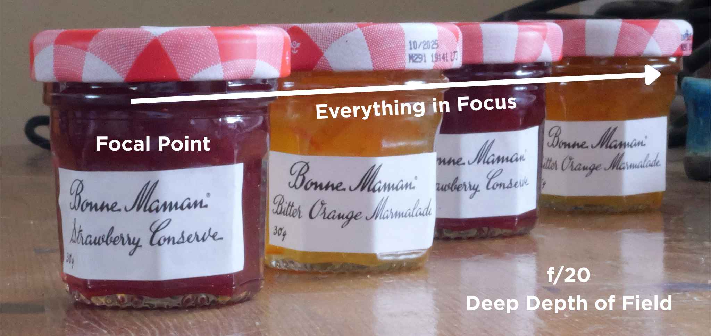

Photography Blog
Photography is all about noticing light, moments, and the stories hidden in everyday scenes. This blog is a space for anyone who wants to grow their skills, spark creativity, and understand their camera with confidence. You’ll find clear explanations, practical tips, and inspiration for everything from portraits to landscapes to creative experiments. Whether you’re just starting out or looking to refine your craft, you’re in the right place. Let’s explore the world through the lens together.
Shutter Speed: The Eyelid That Controls Time
Shutter speed determines how long the camera’s shutter stays open, allowing light to reach the sensor.
It’s measured in seconds or fractions of a second, such as 1/1000, 1/250, 1/60, or 1 second.
A fast shutter speed means the shutter is open briefly, letting in less light.
A slow shutter speed keeps it open longer, allowing more light to enter.
Fast shutter speed (e.g., 1/1000): short exposure, less light, minimal motion blur
Slow shutter speed (e.g., 1/30 or 1s): long exposure, more light, more motion blur
See the images below.


Shutter speed also affects how movement appears in a photo. Fast speeds freeze action, making moving
subjects
like athletes, birds, or pets appear sharp. Slow speeds allow motion to blur, creating a sense of
movement
in
waterfalls, traffic, or people walking. This blur can be used creatively to add atmosphere or energy.
Common shutter speed choices:
• Sports & wildlife: 1/500, 1/1000, or faster
• Waterfalls, night scenes, light trails: 1/15, 1 second, or longer
• Everyday handheld shots: 1/125 or 1/250
If a fast shutter speed makes the image too dark, brighten it by widening the aperture or increasing
ISO.
With slow shutter speeds, use a tripod to keep static parts of the image sharp.
In summary:
Fast speeds freeze action, while slow speeds create blur and mood.
Aperture: Where Light, Blur, and Creativity Collide
Aperture controls the size of the opening inside your lens, determining how much light reaches the
sensor.
It’s measured using f‑numbers such as f/1.8, f/5.6, or f/16. A small f‑number means a wide opening that
lets in
more light, while a large f‑number means a narrow opening that lets in less.
Wide aperture (e.g., f/1.8): more light, shallow depth of field, strong background
blur
Narrow aperture (e.g., f/16): less light, deep depth of field, more of the scene in
focus
See the images below.


Aperture also shapes how much of your photo appears sharp. Wide apertures isolate your subject by
blurring the
background, while narrow apertures keep detail from foreground to background. Subject distance and focal
length
also influence depth of field, but aperture remains the most powerful control.
Common aperture choices:
• Portraits: f/1.8–f/2.8 for soft, blurred backgrounds
• Landscapes: f/8–f/16 for sharp detail throughout
• Close‑ups: f/4–f/8 depending on how much of the subject you want sharp
Because aperture affects exposure, changing it may brighten or darken your image. Balance it by
adjusting
shutter speed or ISO.
In summary:
Wide apertures add blur and light; narrow apertures add sharpness and control.